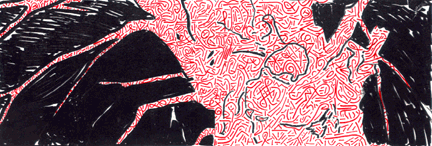

A World Community of Old Trees
Student Project
Josh

Interactive Tree Chaos Series
Please open the Tree Images below and feel free to interact with them with an Image Manipulation program such as Photoshop, or print them out on your printer making changes with conventional art materials, and e-mail them back to this site
Tree Chaos #1
(Click for larger format & link to two new images from Sultan)
Tree Chaos #2
(Click for larger format and to see Jenny's new Space Tree Image)
Tree Chaos #3
(Click for larger format and for links to Pierre's image, Tree Song by Sara, 2 new pieces back from Josh, 4 images from Marilee, and 4 from Emine)
"In the midst of doing compositional studies from the photo with acetate and marker, I realized that the studies themselves were pretty interesting. From there, it was off to the photocopier where I turned and flipped the transparencies. From there, I reassembled the photocopies into their final form and added the colored lines in marker.
I've made several discoveries while doing this project. The first is that even though I've lived in Flemington, New Jersey for most of my life, this is the first time that I actually saw my tree (it's on Main Street). About 100 yards behind my tree is a newly built prison on land that used to be a playground. Furthermore, I have definitely anthropomorphized my tree, seeing several distinct faces and human body elements in its bark and limbs."
© Josh 1996
Grade 12
Gill St. Bernard's School
Gladstone, New Jersey USA
Tree Chaos Series
Xerox and Marker on Paper 8 "X14"
Beech
Latin Name: TBA
Age: Unknown
Circumference: TBA
 Return to Main Page
Return to Main Page
Comments
Please send e-mail to: June Julian, jj68@nyu.edu
A World Community of Old Trees
© 1996 - 2004 June Julian
All rights reserved.